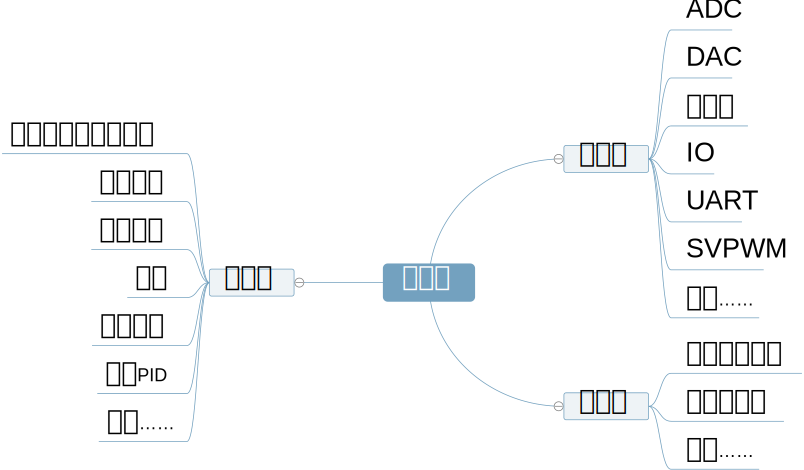

变频器软件模块化设计
创建于2021-4-3
该项目完成于2019-8，原创
该项目完成于2019-8，原创
随着变频器功能的不断增多，以及市场需求的持续升级，使得变频器这一用于驱动电机运行的装置越来越复杂化。与之相对应的，就是变频器的软件也变得越来越复杂，越来越庞大。如果变频器的软件在建立初期没有设计合理的架构，随着越来越多功能的添加，其维护将越来越困难。如果不能做到软硬件分离（指的是与控制相关的代码和与底层硬件相关的代码相分离），那么当硬件发生改动（如更换控制芯片）时，所要花费的时间和精力是巨大的。如果一项功能在实现的时候，与其他功能有很多耦合，那么在移植代码的时候，同样需要花费大量时间，而且出错时候也不容易查找原因。
为了解决上述问题，特对原有变频器软件进行了大刀阔斧的重新设计，主要原则有二：一、软硬件分离，方便程序移植；二、功能之间相互解耦，这样既方便了移植，也可以在出现问题时加快定位速度。

重新设计的变频器软件，可以分为三层：应用层、驱动层和硬件层。应用层主要是一些逻辑控制相关的功能，驱动层主要是电机驱动算法，硬件层则是寄存器配置等与硬件相关的操作。变频器所有功能进行模块化处理，每个功能对应一个模块，这样可以方便增删。目前，该软件已在多个项目得到了应用。